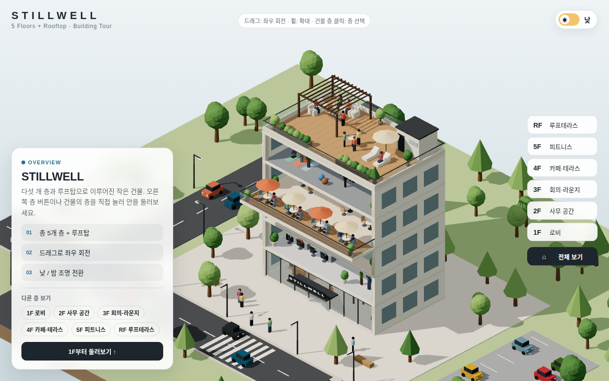
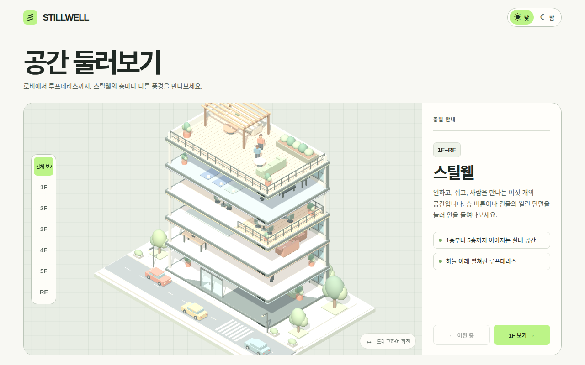
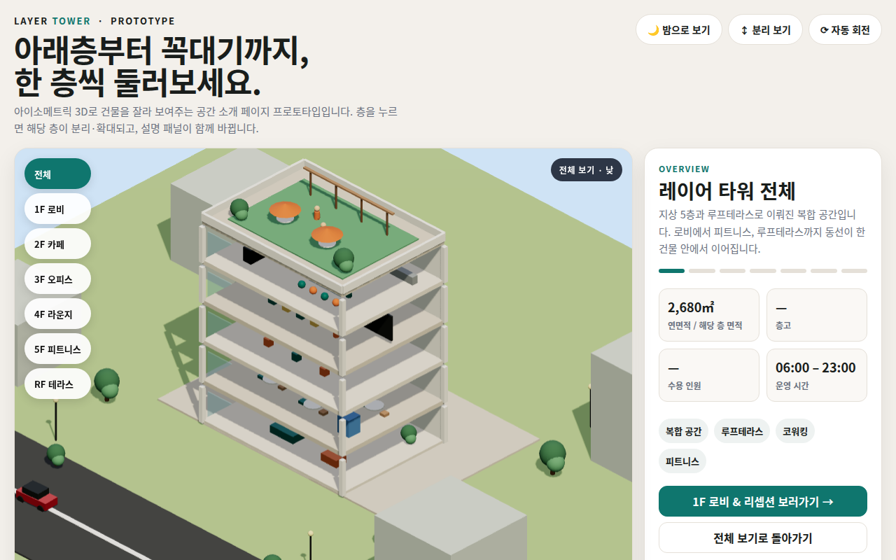
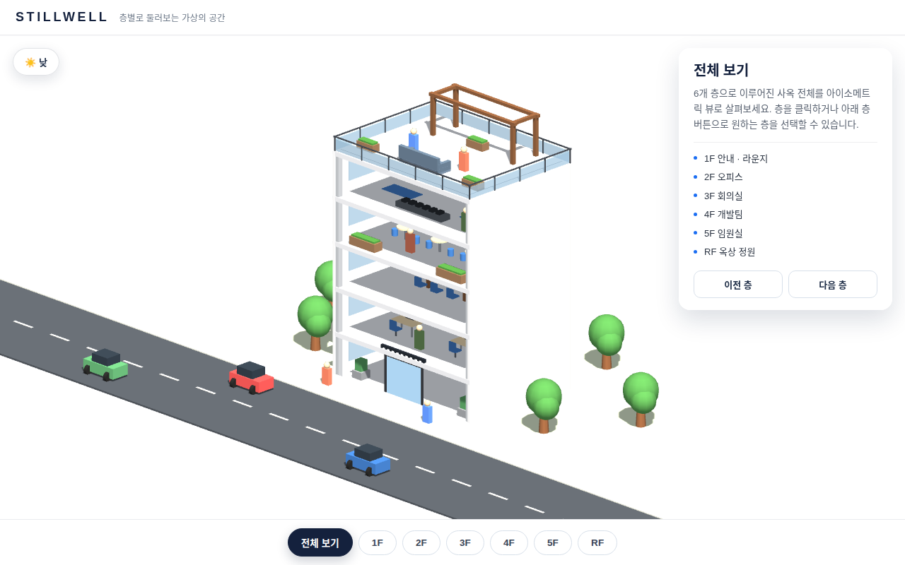
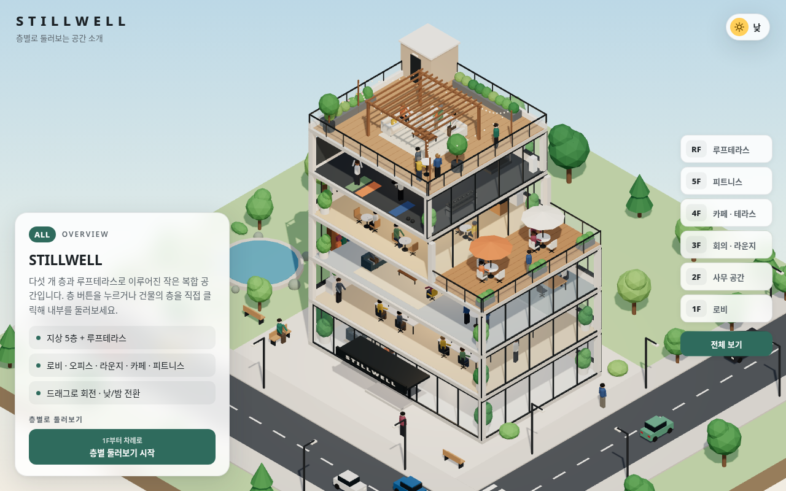
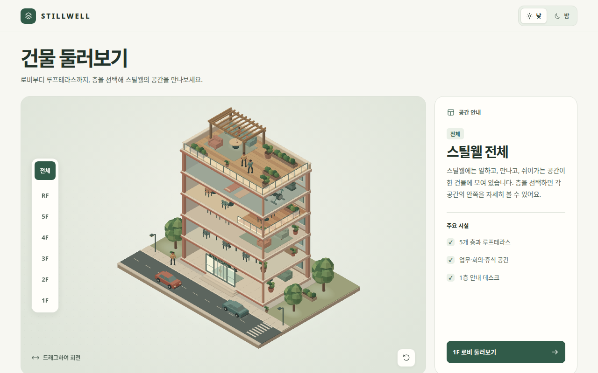

Medium 1차전 순위

1위Claude 97
Opus 5.5 Medium · 요구사항을 거의 전부, 가장 풍부한 디테일로 구현한 완성형. 1F 간판·유리 로비, 층 선택 시 카메라 이동+고스트, 밤 창 전면 발광.
원본 열기
2위Codex 86
gpt-6.2-sol Medium · 깔끔하고 안정적이지만 외벽 없는 슬래브 적층 구조라 디테일이 얇고, 2F가 거의 빈 층, 1F 간판·리셉션 없음.
원본 열기
3위무새 82
패널 정보량(면적·층고·수용 인원·특징)과 부가 기능은 4종 중 최고. 다만 층 배치가 지시와 뒤바뀌었고(2F 카페·4F 라운지) 첫 화면에서 1F가 잘려 보임.
원본 열기
4위DeepSeek 68
V4.1 Flash (100milionseek 경유) · 상호작용은 다 동작하나 지시한 층 구성을 임의로 교체(안내·오피스·회의실·개발팀·임원실)한 것이 결정적 결함.
원본 열기라이브 뷰어
각 화면 안에서 층 버튼·낮/밤 토글·드래그 회전을 직접 조작해 볼 수 있습니다. 로딩이 느리면 잠시 기다리거나 원본 열기를 이용해 주세요.
항목별 점수 (100점)
| 항목 (배점) | Claude | Codex | 무새 | DeepSeek |
|---|---|---|---|---|
| 첫 화면 3D·아이소메트릭·주변 환경 (20) | 19 | 16 | 15 | 13 |
| 층 구성 충실도 (20) | 19 | 15 | 13 | 9 |
| 층 선택 연출 + 전체 보기 복귀 (15) | 15 | 13 | 13 | 12 |
| 정보 패널 (15) | 15 | 14 | 15 | 11 |
| 낮/밤 토글 (10) | 10 | 9 | 8 | 7 |
| 드래그 회전 (5) | 5 | 5 | 5 | 5 |
| 모바일 레이아웃 (10) | 9 | 9 | 8 | 6 |
| 오류 없음·로드 안정성 (5) | 5 | 5 | 5 | 5 |
| 총점 | 97 | 86 | 82 | 68 |
콘솔 오류는 4종 모두 없었습니다. 기능적 치명 결함(로드 실패·조작 불능)은 4종 모두 없고, 내용 결함으로는 DeepSeek의 층 구성 교체+표기 불일치, 무새의 층 배치 뒤바뀜이 기록됐습니다.
제작 스펙 비교
| 구분 | Claude | Codex | 무새 | DeepSeek |
|---|---|---|---|---|
| 모델 / effort | Opus 5.5 / Medium | gpt-6.2-sol / Medium | 아티팩트 빌더 | V4.1 Flash / Medium 상당 (중개형) |
| 파일 크기 | 53,617바이트 | 45,468바이트 | 약 1.18MB (라이브러리 내장 포함) | 30,005바이트 |
| 소요 시간 | 약 11분 21초 | 단발 실행 | - | 생성 합계 약 454초 |
| 토큰 | 출력 69,229 | 입력 17,929 / 출력 15,989 | - | 산출물 기준 49,068 |
| 호출·시도 | 자율 실행 3턴 | 1회 | - | 성공 5건 / 전체 시도 13회 |
| 특이사항 | API 환산 $2.12 (Max 구독 실행) | 가장 적은 출력 토큰으로 86점 | 패널 정보량 최고, 층 배치 오류 | 숨은 프롬프트 622토큰 확인, 조립 개입 있음 |
High 재대결 결과 (상위 2개)
| 버전 | High | Medium | 변화 |
|---|---|---|---|
| Claude (Opus 5.5) | 99 | 97 | +2 |
| Codex (gpt-6.2-sol) | 88 | 86 | +2 |

Claude High — 99점
Medium의 유일한 감점이었던 '첫 화면에서 중간 층 내부가 덜 보임'이 해소돼 전 층 내부가 첫 화면에서 확인됐고, 모바일 층 버튼이 하단 한 줄로 정돈됐습니다. 73,807바이트, 출력 101,072토큰, 약 16분 15초, 로그상 $3.28.
원본 열기
Codex High — 88점
Three.js 없이 Canvas 2D 투영만으로 회전·층 분리까지 구현한 것이 인상적입니다. 층 선택 시 RF 분리 연출과 첫 화면 마감이 좋아졌으나, 1F 간판 부재와 2F 빈 층은 Medium에 이어 반복됐습니다. 60,141바이트, 출력 32,152토큰, 약 10분 53초.
원본 열기두 모델 모두 High에서 정확히 +2점씩 올랐고, 11점 격차는 그대로 유지됐습니다. 기능적 치명 결함과 콘솔 오류는 High 2종 모두 없었습니다.